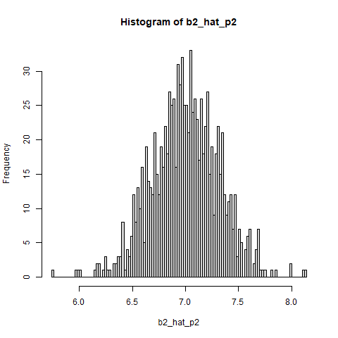

if the true data generating algorithm is y = \beta_1 x_1 + \beta_2 x_2 + e , and we regress y on x_1, x_2, x_3, where \text{corr}(x_1,x_3) = 0 and \text{corr}(x_2,x_3) = 0.999 , the problem we'll run into is multicollinearity.
orthogonal regressors : if x_1 and x_2 are orthogonal, that implies \text{corr}(x_1,x_2) = 0
OLS to be efficient
E[u|x] = 0
(x1, x2, y) are iid
large outliers are unlikely
+ homoskedastic errors [to make it efficient]
a simple regression of x_3 on x_1 gives R^2 = 0, means \text{corr} (y, \hat{y}) = \text{corr} (x_1, x_3) = \sqrt{R^2} = 0
y on x1 x2 is a good model, it's the top column.
y on x1 x2 x3 is a pickle
since corr(x1,x3) = 0, adding x3 wont have any significant effect on the estimate \hat{b1}, or \text{var} ( \hat{b1})
but since \text{corr}(x_2,x_3) = 0.999 , it is very hard to tell if the correlation between x2 and y is really coming from x3, or visa versa. that's the the multicollinearity piece
after adding x3 : what happens to b1_hat, b2_hat, SE(x1), SE(x2) ?
\text{E} [ \hat{ \beta_1} ] = \beta_1
\text{E} [ \hat{ \beta_2} ] = \beta_2
\text{SE} ( \hat{ \beta_1} ) doesnt change
\text{SE} ( \hat{ \beta_2} ) increases
the estimators b1_hat and b2_hat are still unbiased and consistent, but b2_hat will struggle, even asymptotically
|  |